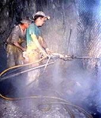

AEROSOLS
 ShareCompartir
ShareCompartir

Cincinnati-DART
Internal Research
N005 CBR Terrorism Control Technology
Project Officer: Mike Gressel
- NIOSH technical report on Building Protection
- NIOSH technical report on CBR Filtration
- Building vulnerability evaluations of approx. 60 buildings
N006 Engineering Control Technology Research Support for the IRS
Project Officer: Scott Earnest
- Control recommendations to reduce worker exposures to CBR agents
- Technical report summarizing study findings
- (1 paper in journal review)
N008 Computational Fluid Dynamics (CFD) in Control of TB
Project Officer: James Bennett
- T his study is evaluating the turbulence models currently used alongside a more accurate turbulence model and experimental results.
- Tracer gas or aerosol experiments are being performed in a room sized chamber to obtain concentration fields for comparison with the fields generated using CFD.
- A publication is being prepared that makes recommendations for successful CFD simulation of TB care facilities and that evaluates current TB ventilation guidelines.
N007 USPS: Emission Controls for Mail Processing and Handling
Project Officer: Bryan Beamer
- Changes in engineering controls and work practices were evaluated at the USPS
- NIOSH technical reports and a journal article have been written
- CFD and experimental data was used to recommend control modifications
7066 NIOSH Manual of Analytical Methods Cooperative Research
Project Officer: Paul Schlecht
- Coordinated and edited 22 new and 7 updated aerosol methods for 3rd supplement the 4 th edition of NIOSH Manual of Analytical Methods
- Performed a user check of 2 aerosol-related methods
- Edited 7 new chapters on aerosol related topics for the Manual
7089R Control of Disease Transmission in Commercial Aircraft Cabins
Project Officer: Jennifer Topmiller
- A computational fluid dynamics (CFD) model of the interior of a 767 cabin was completed by the contractor. This model will be used to investigate the impact of varying cabin flow conditions (flow rates, temperatures, velocities, etc.) on the flow patterns in the cabin.
- An experimental study is underway to conduct Stereoscopic Particle Image Velocimetry (SPIV) measurements of the flow in a mockup of a 5 seat row section of a 767 cabin. The results of this research will be used to validate the analytical model.
- An interagency agreement with an independent laboratory is planned to provide confirmation of the modeling procedures used by the CFD contractor. A bioaerosol sampling study is being conducted.
7331 Screening Methods for Airborne Metals in Construction
Project Officer: Kevin Ashley
- On-site measurement methods for lead and hexavalent chromium in workplace air have been developed and evaluated. This research has led to the promulgation of several NIOSH methods and ASTM standards.
- Ultrasonic extraction was investigated as a means for sample dissolution of multiple metals in air samples, and has been found to perform adequately for a number of elements.
- International standards for the measurement of lead and multiple elements in workplace air samples have been published. Of particular importance are new standard procedures for the measurement of soluble metal species.
- A patent describing a field-screening method for lead in dust wipe samples has been licensed for marketing.
- Field measurement of blood lead concentrations using portable electroanalysis has been evaluated in several on-site studies.
- *A statistical formalism covering performance criteria and characteristics of field screening test methods has been developed, enabling the use of screening analysis for defensible decision making concerning potential exposures.
Development of Fine Particle Characterization and Monitoring Methods
Project Officer: Andrew Maynard
- Development of a numerical model describing the growth of aerosol particles through coagulation
- Characterization of ultrafine aerosol generation from grinding operations
- Investigation of ultrafine agglomerate de-agglomeration in pulmonary surfactant
- Characterization of exposure to unprocessed carbon nanotubes
- 5 published papers, 3 in preparation
7402 Use of LC/MS to Identify Isocyanate Exposure Hazards
Project Officer: Robert Streicher
- Developed NIOSH Method 5525 for isocyanates,whose sampling strategyis flexible and linked to the physical and chemical characteristics of the airborne isocyanate.
- Determined that slow-curing isocyanate aerosols, e.g., from autobody painting, can be collected without significant losses using a reagent-coated filter (as opposed to an impinger) if that filter is extracted immediately after sampling (1 paper published).
- Determined that sampling of autobody painting overspray does not require an inhalable sampler for quantitative collection, based on the fact that impingers gave equivalent results toIOM filters (1 paper published).
Aerosol Measurement Research
Project Officer: Paul Baron
- Co-edited a book entitled Aerosol Measurements: Principles, Techniques and Applications with Klaus Willeke, Univ. Cincinnati.
- Evaluated techniques for evaluating large particle sampling efficiency (1 paper)
- Investigate electrostatic effects in bacterial charging and viability (3 papers)
- Developed technique for evaluating sampling cassette leakage (3 papers)
- Generated samples for in vitro studies of length-classified fibers (2 papers)
- Evaluated carbon nanotube generation potential and workplace exposure (NTIS report, 1 paper)
- Generated size selected fibers for in vitro and in vivo toxicity tests by HELD
8156 Quantitative TB/PCR Mycobacteria Air Sampling
Project Officer: Millie Schafer
- Developed novel qualitative method that permits rapid detection of airborne TB and other mycobacteria (1-2 days) and circumvents problems associated with traditional culturing methods (3-6 weeks for TB). (2 papers, NIOSH Method, patent)
- Developed quantitative airborne TB/mycobacteria analytical method.
- Evaluated UV radiation for killing airborne bacteria in hospital rooms and elsewhere (6 papers, 2 Ph.D. dissertations).
8161 Screening of Metalworking Fluids Using LC/MS
Project Officer: Jack Pretty
- Developed a method for a biocide (Bioban) in field samples of metalworking fluids (MWF) (1 paper).
- Investigated presence of nitrosamines, potentially carcinogenic byproducts of ethanolamines that are routinely added to metalworking fluids. A method using electrospray/mass spectrometry (ES/MS) is being developed for at least 10 nitrosamines.
- Tuberculostearic acid, which has been identified as a breakdown product of mycobacteria in MWF (the organisms have been linked to hypersensitivity pneumonitis)is also responsive in ES-MS.
- Gas chromatography/mass spectrometry screening has been used to identify ethanolamines, an ethanolamine borate, an isothiazolone biocide and waxy esters.
8163 Control Technology Research for Worker Health
Project Officer: R. Leroy Mickelsen
- The purpose of this project is to manage several short-term occupational health engineering research studies. Each of the sub-projects is at different stages of development and implementation and will address the occupation health concern with an engineering approach
- Projects include lead exposures at in-door firing ranges, ground-based aircraft air quality, control of beryllium exposures
8165 Engineering Development Research for Occupational Health
Project Officer: John Sheehy
- Engineering control strategies can reduce exposures and subsequent health effects in a variety of occupational settings. This project incorporates several short-term, medium-sized occupational health engineering development research studies.
- For FY03 there are five research sub-projects: Assessment of Exposures and Controls for Prescription Pharmaceuticals, Advanced Ventilation Control Techniques, Control of Refractory Ceramic Fiber Exposures, Control of Vehicle Exhaust at Border Crossing Stations, and several non-aerosol related projects
8166 Control Technology/Exposure Study for Beryllium Ultrafines
Project Officer: Keith Crouch
- This project has identified industries where sub-micrometer beryllium particle control is an issue.
- This project is c haracterizing exposures and assessing controls.
- G aps in current control methods to reduce exposure are being evaluated.
8169 Reduction of Silica Exposures in Construction Project
Project Officer: Alan Echt
- Development and evaluation of controls to reduce silica exposures in construction
- 1 journal article and 3 indepth technical reports
8314 A Method for Simultaneous Analysis of Multiple Pesticides
Project Officer: Raymond Biagini
- Fluorescent covalent microsphere immunoassay [FCMIA] methods for measuring four pesticides/pesticide metabolites simultaneously in urine were developed. The four differing classeswere chloroacetanilide, triazine, phenoxyalkanoic acid and glyphosate and specific pesticides were atrazine, metolachlor, 2,4-D and glyphosate. Benefits of FCMIA over existing technologies include increased speed, smaller sample volumes, equivalent or better sensitivity andgreater dynamic range.
8404 Computational Fluid Dynamics (CFD) in Control Technology
Project Officer: Jamie Bennett
- Improved understanding of particle loss and leakage in filter cassettes
- Three journal articles and 2 NIOSH technical reports
- Improved understanding of exposures and controls for silica
8417 Physical Characterization of Ultrafine Particles
Project Officer: Andrew Maynard
- Estimation of the relationship between aerosol mass and surface area during ultrafine aerosol generation
- Development of a method to estimate aerosol surface area from number and mass concentration measurements
- Development of a method to depth profile the surface of ultrafine particles using analytical electron microscopy to investigate surface enrichment of elements in welding fume
- 2 published papers, 1 in preparation
8456 Applied Monitoring Studies
Project Officer: David Bartley
- Co-authored the NIOSH/ NCID publication entitled: “Histoplasmosis Protecting Workers at Risk”
- Awarded contract to Aerotech to optimize Histoplasma recovery in environmental samples
- * Measurement Uncertainty and NIOSH Method Accuracy Range was completed for application within ASTM in accommodating the ISO Guide to the Expression of Uncertainty in Measurement and for publication as a chapter within the NIOSH Manual of Analytical Methods.
- * ISO/FDIS 15767 Workplace atmospheres---Controlling and characterizing errors in weighing collected aerosols was revised and released by ISO/Central Secretariat, Geneva, for final balloting prior to publication, anticipated for early, 2003.
8467 Asphalt Fume Chemical Characterization and Hazard Identification
Project Officer: Larry Olsen
- Two public meetings to coordinate asphalt fume research with industry and labor groups
- Developed three NIOSH methods for asphalt fumes
- Collaborated in three Health Hazard Evaluations and produced five papers on asphalt
- Collaborated with EPA and the Federal Highway Administration in a final report on mutagenic potential of asphalt fumes
- Collaborated on report “NIOSH Hazard Review: Health Effects of Occupational Exposure to Asphalt”
- Collaborated on WHO Concise International Chemical Assessment Document on asphalt
- Developed NIOSH document on roofing manufacturing
8492 Assessment of Asphalt Fume Exposure from Roofing Kettles
Project Officer: Dave Marlow
- Multiple reports on controls for reducing worker exposures to asphalt fume
- Improved understanding of exposures and exposure controls for asphalt fume
8497 Analysis of Silica Polymorphs
Project Officer: Rosa Key-Schwartz
- Standard Reference Materials (SRMs) for silica (alpha-quartz and cristobalite) were deposited onto filters for working standards (through contract). The protocol used for deposition may be used in the future for a more precise generation of Proficiency Analytical Testing (PAT) samples.
- Generation of alpha-quartz SRMs were used to compare the U.S. standard (NIST 1878a) and the U.K. standard (Sikron F600). Harmonization may be possible since the calibration curves were equivalent when the bulks were passed through a cyclone to correct for particle size differences.
- *A survey of 80 laboratories in the silica PAT program found that a small percent of laboratories were responsible for the wide RSD seen in PAT results. A detailed analysis of those laboratories resulted in several publications which listed recommendations for standard laboratory practices. OSHA rule making on the silica standard is considering incorporating these standard practices as part of an appendix.
- A high-volume sampler, BGI GK2.69, was tested as a possible alternative sampler. This sampler meets the ACGIH/CEN/ISO respirable aerosol sampling convention and has a sampling rate of nearly two and a half times that of the conventional nylon cyclone, thus enabling collection of more sample mass in the field.
Cincinnati-DSHEFS
000G Improved Environmental Exposure Sampling Methods for Bioterrorism Response Investigations
Project Officer: Teresa Schnorr
- Experimental design plan under peer-review
7011 TB-related Health Hazard Evaluations
Project Officer: Teresa Seitz
- Evaluated the effectiveness of local exhaust ventilation in preventing the spread and reducing the concentration of aerosols during autopsies performed with a reciprocating saw.
- Evaluated the generation and decay (clearance) of polystyrene latex particles in ambulances equipped with and without a supplemental HEPA filtration system
- Results of above work have been published as HHE final reports. Summaries of the evaluations are also presented in NIOSH publication 2001-116 and written as case studies in Applied Environmental and Occupational Hygiene Journal
7132 Ag Health Study: Pesticide Exposure Among Farmer Applicators and their Families
Project Officer: Cynthia Hines
- Completed Year 1 of two-year field data collection.
7421 Environmental and Take-Home Pesticide Exposures – Farm Families
Project Officer: Brian Curran
- Approximately 200 air samples collected from Iowa farm and non-farm homes; majority had non-detectable pesticide levels. Data analysis on-going.
- Preliminary results have been presented at two scientific conferences . “ Pesticide Use and Practices in an Iowa Farm Family Pesticide Exposure Study” published in Journal of Agricultural Safety and Health.
8178 Monitoring Bioaerosols in Commercial Aircraft Cabins
Project Officer: Lauralynn Taylor
- Study protocol was developed and peer-reviewed by scientific experts, industry representatives, union delegates and industry associations.
- Data collection was conducted on 16 flight segments with the cooperation of multiple airlines.
- Data Analysis ongoing
8198 Anthrax - DSHEFS
Project Officer: Rob McCleery
- Field evaluation of air sampling methods for collecting B. anthracis spores has been completed and an interim report provided to the U.S. Postal Service.
8626 Flight Crew Studies
Project Officer: Martha Waters
- Characterized total, inhalable, and respirable particulate levels on a large series of commercial transport aircraft flights, including smoking and nonsmoking flights, for the first time. (2 papers; data contributed to basis for ASHRAE TC 9.3 Cabin Air Quality Standard, 5 invited presentations [2 international])
- Characterized environmental tobacco smoke levels (as nicotine) on smoking-permitted commercial flights (provided field data for NIOSH Method development)
- Characterized settled dust endotoxin levels in aircraft carpets and seats using settled dust vacuum technique developed for the project. (1 paper)
Morgantown-DRDS
7087 Work Related Asthma in Schools and Office Buildings
Project Officer: Jean Cox-Ganser
- Evaluated correlations between health symptoms and environmental measures.
- Correlated w ork-related asthma symptoms with environmental measures of particles, allergens, fungi and bacteria in air and chair dust in a healthcare facility.
- Demonstrated that a Semi-quantitative Mold Exposure Index Predicts Building Related Respiratory Symptoms (honored as a “featured presentation” of the 2002 Indoor Air Conference.)
- Initiated collaboration with NCEH on bioaerosols in schools (NCEH studies children and NIOSH studies teachers and staff).
- Participated in World Health Organization (WHO) expert panel for Guidances on Mold Contamination in Indoor Environments.
- Provided Health Hazard Evaluations for indoor environmental quality.
7167 Emerging Issues in Occupational Respiratory Disease Lab Research
Project Officer: Don Campbell
- Developed, as part of a CDC team, CDC guidance for respirator selection and use for health care workers against smallpox and plague.
- Participated in the ANSI Z88.2 committee that develops a national consensus standard for the use and selection of respirator protection. The standard has been completed and approved by subcommittee, and will be issued when dissenting votes are resolved.
- Served on a NIOSH-wide team to consult with the NPPTL program to develop respirator standards for the use by first-responders in the event of a CBRN (Chemical, Biological, Radiological, or Nuclear) terrorist attack.
- Participated, as a voting member, in the ASAE-PMO3-16 committee developing performance standards for environmental tractor cabs used for pesticide application.
7430 Characterization of TB Aerosols and Implications on Cab
Project Officer: Ernie Moyer
- Assisted in numerous international infection control courses that included respiratory protection as it relates to stopping the spread of TB among health care workers in Russia and Brazil.
- Initiated work on infection control methods including the effectiveness of surgical masks in preventing wearers (patients) from spreading by aerosolization viable bacteria and the effectiveness of an electrostatic netting material which could be used for a net-type enclosure application to control the spread of TB infection.
- Initiated evaluation of 95 filter media to determine aerosol penetration characteristic from low to high flow rates and to use the results in ventilation modeling software to predict overall performance of filters in the field.
8113 Environmental Tractor Cab System Integrity
Project Officer: Ernie Moyer
- Evaluated the efficiency of tractor cabs filtration systems with the mobile and stationary tests.
- Participated in the ASAE-PM 03/16 committee, including actions to revise the ASHE-S525 standard to remove all statements saying that enclosed tractor cabs can be used in lieu of respirators, and an initiative to change the 3-micrometer evaluation criteria for certifying cabs to a submicrometer aerosol criteria as soon as a reliable test method can be developed and validated.
8114 Investigation of IEQ Process, Instrumentation, & Interventions
Project Officer: Chris Coffey
- Initiated work on new methods for the analysis of indoor air samples and for the evaluation of the actual service life of ventilation filters under real world use conditions.
8116 Industrial Ventilation Systems Research
Project Officer: Stephen Martin, Jr.
- Established a base method for aerosol sampling with MiniCans and/or thermal desorption tubes.
- Collaborated with DART to evaluate several prototype ventilation/filtration systems for the United States Postal Service (USPS) for total system integrity and efficiency. This work is being done as part of the USPS Emergency Preparedness Plan to protect postal workers from future anthrax attacks similar to those in late 2001/early 2002.
8117 Longitudinal Follow-up of Food Flavorings Exposed Workers
Project Officers: Greg Kullman, Rich Kanwal
- Confirmed the occurrence of a rare lung disease, “bronchiolitis obliterans syndrome” among workers in the food flavorings industry and published findings in Mobidity and Mortality Weekly Review, the New England Journal of Medicine, and an Epi-X.
- Demonstrated in laboratory animal experiments performed by HELD/DRDS that inhaled butter flavoring vapors can cause severe damage to respiratory epithelium that may explain the observed effects in workers. (Published in Toxicology and Applied Pharmacology)
- Demonstrated that diacetyl (a primary flavoring component) also showed respiratory epithelial damage but not to the same extent as the intact butter flavoring.
- Provided control and respiratory protection recommendations to flavorings plant operators.
- Initiated work with flavoring and food scientists regarding alternative flavoring formulations (powders vs. liquids and pastes) to mitigate exposures to VOCs in microwave popcorn production.
8153 Respiratory Disease Health Hazard Evaluation
Project Officer: Dee Cress
- Applied aerosol characterization and control technologies for a broad range of airborne hazards including molds, asbestos-contaminated vermiculite, wood dusts, Mycobacterium bovis, beryllium, and food flavorings.
- Evaluated and demonstrated the efficacy of field use of laser-induced-breakdown spectroscopy for realtime detection of beryllium.
8193 Emerging Issues in Occupational Respiratory Disease Field Studies
Project Officer: Kay Kreiss
- Contributed to the development of new aerosol exposure assessment methods and standards, including instrumentation for homeland security.
8208 Beryllium Disease Surveillance/Research
Project Officer: Christine Schuler
- Conducted exposure assessment and epidemiology studies to identify work processes that convey risks for the development of beryllium sensitization and chronic beryllium disease.
- Proposed that bioavailability of inhaled and deposited particles (rather than simple airborne mass exposure) could be the appropriate metric for aerosol inhalation risks for beryllium.
- Recommended that workers should be protected from dermal exposures to beryllium, in addition to traditional emphasis on protection from inhalation exposures.
- Prepared a report on relationships between settled dust samples, air samples and health outcomes.
- Prepared a report on the estimated number of workers who may be exposed to beryllium in the primary and downstream beryllium industries to provide an improved basis for protecting workers from exposure to beryllium.
- Developed a comprehensive plan for evaluating worker exposures to beryllium aerosols and particles.
Morgantown-HELD
001P Use of PCR Technology for Detecting Airborne Microorganisms
Project Officer: Bean Chen
- A microbial assay was developed for detecting airborne fungi. It has sensitivity of detecting 1-2 spores and specificity of amplifying only target fungi without cross-amplification with non-fungal DNA.
- Effect of dusts on the PCR method was investigated. Results indicate that inhibition varies with the type and amount of dusts. Minimal interference was detected for samples collected from personal samplers.
- A personal sampler was developed for bioaerosol screening using PCR.
001Q Emerging Issues in Exposure Assessment
Project Officer: Martin Harper
- A project is being prepared to investigate the formation of secondary organic aerosol in indoor air through the interaction of ozone and organic vapors.
- A project is being prepared to investigate the use of inhalable samplers and portable XRF for the on-site analysis of lead samples meeting the ACGIH/ISO inhalable convention.
- A project is being prepared to investigate inhalable samplers for wood-dust.
002F Acoustical Analysis of Respiratory Maneuvers to Detect Lung Disease
Project Officer: David Frazer
- Developed a system which measures the air flow and aerosol size distribution expelled during a cough.
- Measured air flows and aerosol size distributions from healthy volunteers during coughs.
- Developed a computational fluid dynamics (CFD) model to examine how aerosols are dispersed during a cough.
7085 Microbiology and Analytical Chemistry Support Program
Project Director: Paul Siegel
- Monitor analytical services contract with Bureau Veritas
7100 Portable Analysis of Multiple Airborne Metals
Project Officer: Nicholas Lawryk
- A forum was presented on emerging NIOSH portable methods for airborne metal measurement at the 2002 American Industrial Hygiene Conference and Exhibition. This forum was sponsored by the AIHA Aerosol Technology Committee and the ACGIH Air sampling Instruments Committee.
- Communication interventions were produced in collaboration with an allied program project. These interventions were released in newsletters, journals, trade publications, and general mail to increase awareness of NIOSH portable methods for airborne metals among industrial hygienists.
- Research findings were presented in manuscripts, platform presentations, and workshops.
- Three major workplace surveys to evaluate instruments are now complete. At least two additional site surveys are scheduled for the balance of FY03.
- Research with allied program projects has resulted in the release and validation of a new NIOSH method for portable hexavalent chromium analysis.
- Multiple emerging and prototype technologies were evaluated for possible NIOSH method development.
- A network of mining and construction stakeholders who are interested in research findings has been established.
7102 A Message-Based Intervention for Technology Transfer
Project Officer: Sybil Ott
- Conducted three rounds of message pretesting with a random sample of members of the American Industrial Hygiene Association (AIHA). Pretesting was conducted to test the messages on a small scale before implementing the messages to all AIHA members.
- Implemented two communication interventions focusing on the field portable analytical methods developed by NIOSH researchers Nicholas Lawryk, Kevin Ashley, and Pamela Drake. Both interventions were given to all members of AIHA. The first intervention consisted of a website, a mass mailing, and bi-monthly advertisements in the AIHA Journal. The second intervention consisted of six advertisements that were mailed 1 per week for 6 consecutive weeks. The ads focused on the barriers toward using the methods that were identified in the annual survey. Along with the ads the intervention included the website and bi-monthly ads in the AIHA Journal.
- Completed 1 annual survey assessing the self-reported use of the new methods. Compared to the baseline survey, a small positive change was reported, showing a small increase in the use of the new methods.
7148 Development of New Research Initiatives in Occupational Health
Project Officer: Vincent Castranova
- In collaboration Dr. Calhoun at the University of Pittsburgh, evaluated the role of fiber length on human vs rat alveolar macrophages.
- In collaboration with Dr. Baron (DART) and Dr. Frazer (ECTB), conducted an inhalation study with size-selected glass fibers.
- Under an interagency agreement with OSHA, evaluated the adverse pulmonary effects of exposure to crystalline silica at low doses. These low dose data will assist in risk assessment.
- Under an interagency agreement with OSHA and in collaboration with Dr. Kuempel (EID), Dr. Leroy Lapp (WVU), and Dr. Val Vallyathan (PPRB), modeled the dose dependence of pulmonary inflammation in response to silica dust in coal miners and compared the responses to the rat model.
- In collaboration with Dr. Jones and Greskevitch (DRDS) and Dr. Hubbs (PPRB), published a study on the toxicity of abrasive blasting substitute materials in comparison to silica sand. Successfully submitted a nomination for inhalation studies to NTP.
- In collaboration with Dr. Jones (DRDS), documented the pulmonary toxicity of nylon flock dust.
- Evaluated the role of bacterial endotoxin and fungal b-glucan on the pulmonary responses to organic dusts.
7247 Vibration Effects on Pulmonary Responses to Toxic Agents
Project Officer: David Frazer
- Developed system capable of delivering whole-body vibration to rats parallel and perpendicular to their thoracic cavity at varying frequencies.
- Developed endotoxin exposure system to study the synergistic effect of vibration and endotoxin aerosols in rats.
- Evaluated airway impedance and acceleration of control rats and those exposed to whole body vibration.
7248 Inhalation Facility Support
Project Officer: David Frazer
- Performed whole body inhalation exposures for mice and rats to TDI, asphalt, endotoxin, ozone and popcorn flavorings.
- Measured health effects such as breathing rate, metabolic rate and airway resistance for various inhalation exposures.
- Measured the aerosol filtering characteristics of envelope material in response to anthrax exposure incidents.
7258 Mechanisms of Carcinogenesis Caused by Occupational Exposure to Metals
Project Officer: Xianglin Shi
- Established the mechanism of metal-induced free radical generation in vitro.
- Elucidated the signal transduction pathway of metal-induced activation of transcription factors, NF-kB, AP-1, and p53.
- Measured the metal-induced apoptosis and elucidated the signaling pathway involved.
- Measured the metal-induced growth arrest and elucidated the signaling pathway involved.
7261 Molecular Mechanisms of Disease Development with Mixed Dusts
Project Officer: Val Vallyathan
- Completed chemical analyses of mixed dust from cutting saw blades blasted with silica.
- Completed in vitro toxicity evaluations of dusts from cutting saw blades blasted with silica and silica blasted on to metal components of saw blades.
- Completed in vivo toxicity evaluations using dusts from saw blades blasted with silica, and metal components of the saw blades blasted with silica.
- Authored or co-authored 15 scientific publications.
- Organized the Third International Conference on Oxygen/Nitrogen Species: Injury and Disease.
- Edited and published 45 scientific articles as a focused special issue in the Journal of molecular and Cellular Biochemistry.
- Edited and published 21 scientific articles as a focused special issue in the Journal of Biosciences.
7263 Particle-Induced Injury in Mixed Exposures
Project Officer: Ann Hubbs
- Developed a method to identify smokers in autopsy studies using postmortem tissue samples.
- Established that silica and coal dust suppress the induction of polycyclic aromatic hydrocarbon metabolism in rabbits and rats, respectively.
- Identified the cellular localization of polycyclic aromatic hydrocarbon in the deep lung of coal dust and silica dust exposed rabbits and rats.
- Co-authored 3 abstracts accepted for poster presentations at the Society of Toxicology, United States and Canadian Academy of Pathology, and Environmental Mutagen Society annual meetings.
- Co-authored a manuscript accepted for publication in the Journal of Toxicology and Environmental Health.
7266 Immunotoxicity of Workplace Xenobiotics
Project Director: Al Munson
- Completed study of the prevalence and distribution of latex allergy among health care workers.
- Completed study comparing sensitivity and specificity on in vitro assays for latex sensitivity (2 papers).
- Established collaboration to conduct prospective study of occupational allergens.
7314R Analysis of Genotoxic Activities on Exhaust Emissions from Mobile Natural Gas, Diesel, & Spark-Ignition Engines – Interagency Agreement supported by the US Dept. of Energy
Project Officer: William Wallace
- Interagency Agreement with US Dept. of Energy – National Renewable Energy Laboratory, 2000-2002.
- Interagency Agreement with US Dept. of Energy – Office of Freedom Car and Vehicle Technologies, 2002-2003.
- In vitro genotoxicity assays including “Ames” salmonella mutagenicity testing, mammalian cell single cell gel electrophoresis DNA damage assay, micronucleus assay for chromosomal damage, and cell transformation assay. Diesel, gasoline engine, natural gas engine exhaust particulate and semi-volatile organics supplied from Southwest Research Institute engine test stand; collaboration with DOE – National Renewable Energy Lab and Lovelace Respiratory Research Institute and others.
7376 Computational Fluid Dynamics Simulations
Project Officer: Aaron Bird
- A realistic three-dimensional grid of a human was created and airflow patterns around it was calculated
- CFD simulations of IOM and GSP samplers were conducted
- Quantitative validation metrics was introduced to the comparison of CFD results with empirical data
- Significant collaborations with other organizations, including Jerry Smith of NIOSH-DART to describe the relationship of area sampling to personal sampling for certain air samplers.
8076 Particle Surface Program: Computational Studies
Project Officer: Eugene Demchuk
- Investigation of chemical reactivity of single and geminal silanol groups on silica and comparison of the theoretical and experimental results (3 papers).
- Modeling and calculation of concentration of geminal and single silanol groups on common quartz surfaces (manuscript in preparation).
- Development of computational parameters for quartz and kaolinite (manuscript in preparation).
8077 Particle Surface Program: Dust Characterization
Project Officer: William Chisholm
Program Officer: William Wallace
- In-house NIOSH surface analysis lab with environmental SEM-EDS, SEM-WDS, scanning Auger and X-ray photoelectron spectroscopy.
- Patented multiple-voltage scanning electron microscopy – X-ray spectroscopy (MVSEM) for respirable particle surface elemental composition analysis.
- NIOSH in-house capability for automated combined analyses of specified respirable particles using SEM-X-ray and scanning Auger spectroscopy
- MVSEM surface analysis detected clay occlusion of respirable silica in MSHA coal mine dusts and relationship of this surface property with coal rank and rank-dependent pneumoconiosis.
- MVSEM detected clay surface occlusion of Chinese metal mine and pottery silica dusts and difference in that index between two industries exhibiting different silicosis risk per unit exposure.
- Application of combined analyses to hard metal dusts to identify surface properties of a new high-pneumoconiosis-hazard hard metal production process.
- Several journal publications of methods development and applications, book chapters, several invited presentations; Co-chair International Symposium on Monitoring and Evaluation of Silica Dust Hazards, Wuhan, China, 2001; Alice Hamilton Award 1998.
- Book “Silica and Silica-Induced Lung Diseases” By V Castranova, V Vallyathan W Wallace.
8079 Particle Surface Program: Characterization
Project Officer: David Murray
- NIOSH in-house multi-nuclear pulsed Magnet Resonance Spectroscopy (MRS) or Nuclear Magnetic Resonance (NMR) laboratory.
- High resolution liquid-state MRS and solid-state MRS on primary component of lung surfactant adsorbed on silica and aluminosilicate respirable particle surfaces; publication in preparation.
- Vibrational spectroscopy lab (Fourier Transform Infrared spectroscopy and laser-Raman spectroscopy) in development.
- Electron spin resonance spectroscopy of hard metal surface generation of reactive oxygen species in aqueous media; published.
8093 Role of Apoptosis in Particle Induced Lung Injury
Project Officer: Robert R. Mercer
- Developed methods to determine lung injury resulting from apoptotic cells.
- Experimental studies have determined that inhaled-particle-induced apoptosis occurs for a wide variety of particle types (1 paper, 3 abstracts).
- Accumulated apoptotic cells and cell products produce lung inflammation and early stage gibrosis (1 paper). Lung injury from field dusts in significantly greater than that expected from the crystalline silica content alone (2 abstracts).
8147 Identification of Occupational Allergens
Project Officer: Donald Beezhold
- Completed three studies of hypersensitivity pneumonitis in machinists.
- Established collaboration with Harvard School of Public Health to assess effects of combustion particulates on airway responses among boiler makers (3 papers).
- Developed an animal model of organic acid anhydride induced asthma (2 papers).
- Participated in inter-laboratory comparison of endotoxin analytical procedures (2 papers).
- Provided laboratory support for several HHE investigations in which allergy/asthma was a significant concern (1 paper in 2002).
- Studied pulmonary toxicity of diesel exhaust particulates (DEP) in a rat model and demonstrated the immune adjuvant of DEP in the particulate fraction while macrophage function was inhibited by the organ fraction (5 papers).
8425 Pulmonary, Immune, and Dermal Effect of Welding Fume Inhalation Exposure
Project Officer: James M. Antonini
- Authored comprehensive review of welding literature and published article entitled “Health Effects of Welding”.
- Developed laboratory methods to assess the effects of pulmonary aerosol exposure on the susceptibility to lung infection (5 papers). Welding fume decreases the ability of alveolar macrophages to kill bacteria.
- Developed new methodology using laser scanning confocal microscopy to study the 3-D deposition of inhaled particles in the lungs (3 papers).
- Heading a NIOSH/NTP initiative to assess the chronic effects of welding fume exposure.
- Scientific Advisor for the Safety and Health Committee of the American Welding Society.
8917 Asphalt Fumes: Inflammatory Effects and Pulmonary Injury
Project Officer: Jane Ma
- Found that exposure of the lung to asphalt fume did not cause pulmonary inflammation or damage and did not alter the activity of alveolar macrophages or the ability to fight infection.
- Exposure of rats to asphalt fume generated under road paving conditions resulted in a significant induction of CYP1A1 and a significant attenuation of CYP2B1 in the lung (1 paper).
- Inhalation of asphalt fume resulted in dose-dependent DNA damage in AM.
- Asphalt fume exposed-S9 fractions showed greater capacity in activating known mutagenic PAHs.
- The genotoxic effects determined in these studies were dose-dependent with respect to the asphalt fume exposure.
- Evaluate the affects of exposure to diesel exhaust particles on the ability of lung phagocytes to fight infection. Diesel exhaust particles increased pulmonary susceptibility to infection.
Pittsburgh-PRL
014 Dust Control in Surface Coal Mining
Project Officer:
- At surface coal mine sites, rotary blast hole drills with dry dust collectors were found to be the highest source of dust contamination. Dust levels inside a drill cab were reduced by 90% after retrofitting a filtration system to the cab, a prototype dust collector inlet shroud was designed to improve dust capture at the drill deck
- A novel dust sampling method was developed to evaluate the impact of drilling parameters and rock lithology on the amount of dust generated at the source.
016 Diesel Engine Emission Measurement and Analysis
Project Officer:
- In partnership with the Bituminous Coal Operators Association and the United Mine Workers of America, developed a complex test matrix to evaluate diesel particulate matter control technologies for use in underground coal mines.
- The construction of a portable diesel dynamometer is complete.
- Researchers at PRL have been working in Canada with DEEP (Diesel Emissions Evaluation Program) to measure emissions from underground diesel equipment, evaluate control technologies, and refine measurement methodologies.
017 Silica Dust Control in Metal/Nonmetal Mining
Project Officer:
- The article entitled “Methods to Lower the Dust Exposure of Bag Machine Operators and Bag Stackers” by Andrew Cecala, Robert Timko and Edward Thimons received the Michigan Industrial Hygiene Society Award for best publication in AIHA or AOEH journals for calendar year 2000.
019 Assessment of Personal Particulate Exposure
Project Officer:
- Testing of the 2-piece Personal Dust Monitor (PDM-2) demonstrated that tapered element technology could successfully measure mass on a person in the mine environment. This technology allows miners to monitor their dust exposure during the shift and provides an end-of-shift dust exposure immediately.
090 A Health Hazards Study of Surface Drilling Operations
Project Officer:
- A total of 5 (five) workshops were conducted at several national and state conferences affiliated with the surface drilling industry. The workshops provided attendees with data results (noise and dust) obtained from 11 (eleven) field sites where noise and dust exposures to workers were monitored.
Spokane-SRL
S262 Characterization and Communication of Chemicals Hazards in Mining
Project Officer: Pamela Drake
- Developed interactive CD-ROM – NIOSH HazCom Helper – to assist mining companies with developing their written hazard communication program
- Developed method for soluble silver analysis. Field samples need to be collected and analyzed to further validate the method
S346 Portable Monitors for Airborne Metals at Mining Sites
Project Officer: Pamela Drake
- Evaluated on-site measurement methods for lead (developed by DART and HELD) at mining sites. Good correlation between field and laboratory results. Evaluation of Two Portable Lead-Monitoring Methods at Mining Sites
- Modified NIOSH Method 7703 (field portable method for hexavalent chromium) to extract both soluble and insoluble hexavalent chromium
S380 Reducing Diesel Particulate Exposure in Western Mines
Project Officer: David Denton
- Strategy for evaluating SPM control technologies in an underground mining environment was developed using ambient and on-board engine monitoring
- Developed an isokinetic sampling probe for obtaining DPM samples from entry air to an underground mine stope through a flexible duct
- Conducted several surveys collected background/baseline conditions and post-control technology conditions
- Completed initial comparative study of the SKC DPM cassette vs. active DataRAM
- Completed DPM survey in support of a NIOSH grant focusing on health-relevant, ambient DPM monitoring techniques in the underground mining environment.
- Page last reviewed: July 20, 2010
- Page last updated: July 20, 2010
- Content source:
- National Institute for Occupational Safety and Health Education and Information Division